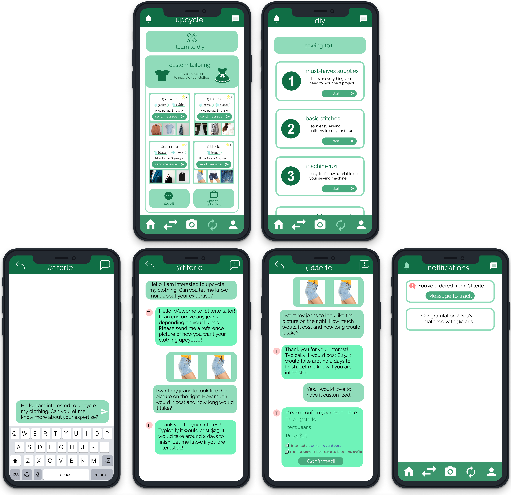

Solution
Design Decisions
1. Colour
We chose to go with a green colour palette for our prototype. The main objective of hang on! is to push users to make more eco-friendly and sustainable decisions when it comes to clothing, so we wanted to emphasize that through the appearance of the app.
2. Features
hang on! has 4 main features that were designed and decided from the feedback we received during our research period.
a. Profile Creation

Since hang on! is another option to online shopping, we wanted to address the doubt users have with getting accurate sizing through online platforms.
When a user creates their account, they will be asked to input their clothing and shoe measurements. This is to ensure that the items they see will be tailored to their sizing and they can find users with similar measurements.
b. Discovery & Swap
A common user concern with clothing that was brought up was pricing.


To address this, one of the main ways to recycle and reuse old clothing is to swap it with other users.
Once users post the clothing they want to swap onto the app, they will be able to go through the swapping process. Similar to the swipe left and right features found on dating apps, users can swipe right for the clothing they want. Only nearby clothing within their geolocation will be shown.
Users will be notified once they get a match and can begin direct messaging the other. The process has no price tag and it is up to the users how they will swap clothes (setting up a meeting or shipping clothing).
c. Upcycling & DIY
Not all users may feel comfortable swapping clothing or can get rid of it so they have the option to learn how to upcycle it or commission local services.
A main part of our upcycling feature is that we are partnering up with local services like tailors so that users are able to pay commissions to have their clothes upcycled. "101" tutorials are also available to learn basic DIY skills.
d. My Closet
Users also have the option to upload their closet to the app and get outfit inspiration.
From our research, we found that most participants get their outfit inspiration from social media, so with hang on! users can get their inspiration in one place and have it personalized as each user’s closet is unique to their style.

Users can mix and match what they saved and see mulitple ways how they can make an outfit. Since they are finding new ways to wear their old clothing, it reduces waste and the need to buy new clothes and throw out old ones.